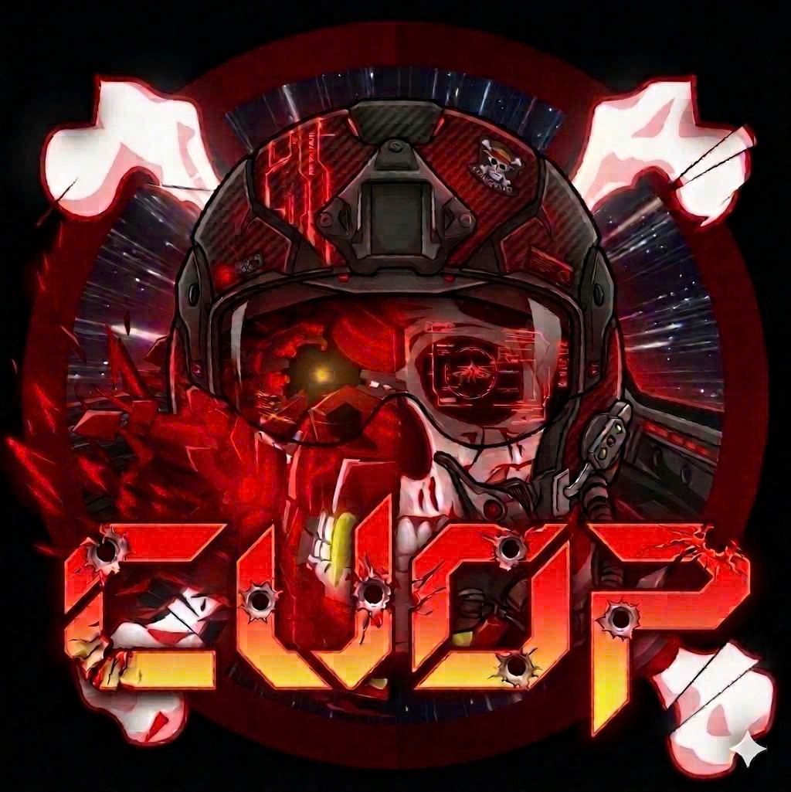

Hạm đội Cướp - Phi Đội 3 VTC
Event: CHIẾN CÔNG HẠM CƯỚP
Thời gian diễn ra:
Từ 0h00 ngày 01/04/2026 đến hết ngày 30/04/2026
Điều kiện tham gia:
Toàn bộ nội bộ hạm Cướp
Nội dung:
Trong thời gian diễn ra sự kiện, toàn bộ thành viên hạm Cướp sẽ tiến hành
“Cướp” Killmark của quốc gia đối địch là A.N.I
trên toàn bộ các mặt trận.
Cách tính điểm:
Ban tổ chức sẽ dựa vào bảng xếp hạng và chỉ số Killmark tháng của từng thành viên,
theo dữ liệu tổng hợp từ VTC Game.
🏆 Giải thưởng (xếp hạng theo từng gear)
- 🥇 Giải nhất: 1500 VC - Thành viên có Killmark cao nhất
- 🥈 Giải nhì: 1000 VC - Thành viên đứng thứ hai
- 🥉 Giải ba: 500 VC - Thành viên đứng thứ ba
- 🎖 Khuyến khích: 200 VC - Thành viên đứng thứ tư
Phần thưởng thêm:
Mỗi tài khoản đạt chỉ số Fam trên 3000 sẽ nhận thêm
200 Vcoin.
⚠️ Lưu ý
- Điều kiện hoàn thành event: Hạm Cướp phải đạt Top 1 Fam trong tháng 4.
- Nếu không đạt, BTC sẽ họp và điều chỉnh lại cơ cấu giải thưởng.
📊 Điều kiện Fam tối thiểu theo Gear
- MG: 3000 Fam
- BG: 6000 Fam
- IG: 5000 Fam
- AG: 7000 Fam
Liên hệ:
Zalo: 0971486555
Chúc anh em chơi game vui vẻ!
TM. BTC
CuopSac
CuopNganHang
GULU